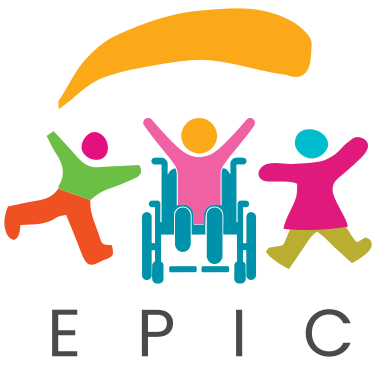
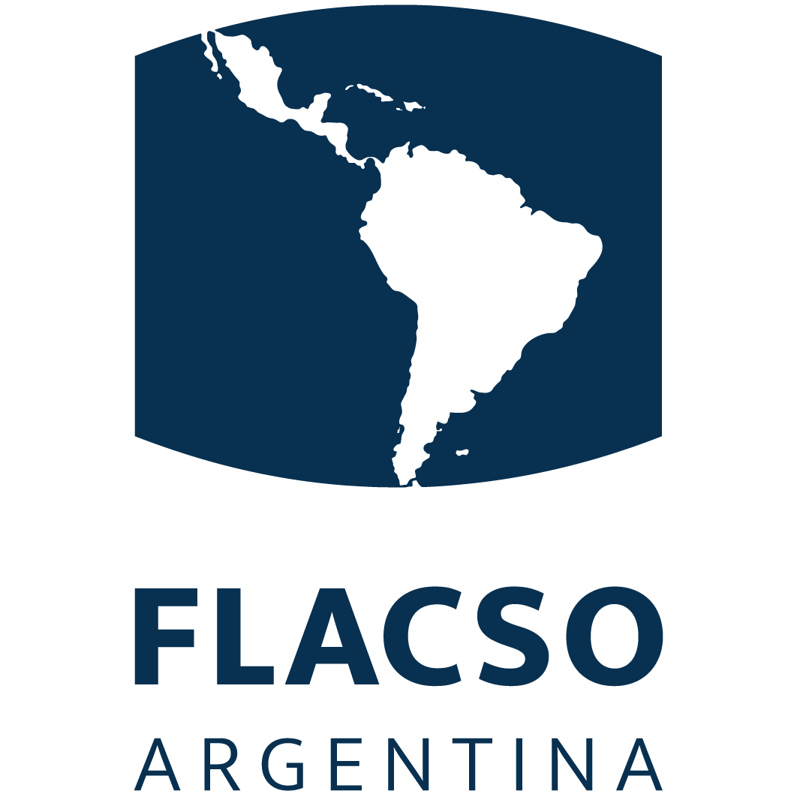

Making every child in Biakoye shine bright!
A book all about YOUR district

CHILD-FRIENDLYHello!
Biakoye is your home. Grown-ups made a big plan so every child here grows up happy, healthy, safe and ready to learn. This little book tells you what is in that plan — and how you can help.
Our 6 Super Powers
First, two big words
Imagine your neighbourhood as a huge team — the District Assembly is like the coaches and leaders of that team!
They are the local government people whose job is to take care of the town: fix roads, build schools, keep streets clean, and make sure everyone stays safe and happy.
Local government — The leaders in charge of your own district, rather than the whole country.
And the second one
A district plan is like a giant map made by local leaders to make a town or district a much better place to live!
Instead of adults just guessing what to do, the plan lists the biggest problems — dirty streets, schools that need help, places that need safer parks — then writes a step-by-step checklist for fixing them.
The Biakoye District Assembly in the Oti Region made its very own district plan — for every child, no matter where they live or what special abilities they have!
Biakoye District Assembly — The local government team in charge of Biakoye District. They look after all its towns, villages and islands.
Oti Region — Ghana is split into big areas called regions. Oti is one of Ghana's newest regions, and Biakoye is one of the districts inside it.
The big vision
Five big dreams, for every single kid — whether they live in a busy town, a quiet village or on an island in the lake.
At home, by the grown-ups who look after them.
And grows up big and strong.
At home, at school and all around the community.
Including children with special needs or disabilities.
In awesome, friendly schools!
Who is the plan for?
Everybody counts — and the plan makes sure help reaches the children who are hardest to reach.
Every little kid in Biakoye, and the mums, dads and caregivers who look after them.
Kids whose bodies or brains work in their own way, and who need the right support to join in.
Families on islands and by the lake, far from the nearest clinic.
Growing up fast, and learning to make smart, healthy choices.
Caregivers — Anyone who looks after a child — like a grandma, an aunty, an uncle or a big sister.
Islands — A piece of land with water all around it. Some Biakoye families live on islands in the big Volta Lake, so help comes by boat.
Understanding the plan
To make the dream come true, Biakoye's leaders are focusing on six priority areas — and every one of them points back at the same thing.
Turn the page to meet all six!
Priority areas — The things that matter most, so they get done first.
Positive parenting
A happy home is where every child's story begins!
Teaching mums, dads and caregivers how to give positive love, care and support.
Bringing families together so they can share ideas, help one another and learn together.
Working with chiefs, religious leaders and local heroes who speak up for children.
Speak up — To speak up for someone means to stand up and tell others what they need — even when they can't say it themselves.
Nutrition and health
Growing bodies need good food, clean hands and a quick check-up!
Helping families grow fresh, tasty fruits and vegetables right at home.
Checking on little ones early, so anyone who is growing slowly gets extra help right away.
Handwashing stations at schools — and boats that carry health workers and medicine to children living on islands!
Nutrition — The good stuff inside food that helps your body and your brain grow big and strong.
Child protection
A whole community standing guard, like a giant shield around every child!
Caring helpers visit homes to make sure every child is safe and protected from harm.
Helping older kids make smart, healthy choices and stay away from bad substances.
Easy ways for anyone in the community to tell someone when a child needs help or protection.
Child protection — Keeping children safe from anyone or anything that could hurt them.
Bad substances — Things like drugs, alcohol and cigarettes, which can harm a growing body and brain.
Disability inclusion
Every door open, every path smooth — so every child can join in!
Making sure schools, health centres and playgrounds are easy for everyone to get into.
Building ramps, smooth paths and easy doors for children who use wheelchairs or need extra help walking.
Parks, daycares and libraries with clear signs, pictures and sounds, so every child can play together.
Disability inclusion — Making sure children whose bodies or brains work differently can join in with everything, everywhere.
Ramps — A gentle slope instead of steps, so a wheelchair, a pram or wobbly legs can roll or walk right in.
Early learning
Great teachers and fun tools make learning an adventure!
Special training for teachers and school workers, so they know how to support every child's learning.
Making fun books, toys and activity guides in local languages.
Looking at schools again and again, to make sure learning stays fun, safe and helpful.
Local languages — The languages families speak at home and in the market, so every child can understand and join in.
Working together
No one can do it alone — so everybody joins one big team!
Bringing leaders, doctors, teachers, local chiefs and churches together into one big team to support our children!
The team
Why six super powers and not one
Imagine building Biakoye out of giant toy blocks. Every colour is one of the six super powers — take a colour away and the whole town wobbles!
Home gardens are great — but not if a child can't get through the school door. Ramps help — but not if nobody is checking that children are safe at home. When all six super powers work together, Biakoye becomes a place where every child can shine bright.
Your turn
You are part of Biakoye's team too!
Biakoye is your home too. Your voice helps every child shine.
Working together

Source: Biakoye District Assembly District Plan (Oti Region) — child-friendly summary, prepared for the EPIC Project.
This research was funded by the National Institute for Health and Care Research (NIHR) [NIHR158910] using UK international development funding from the UK Government to support global health research. The views expressed in this publication are those of the author(s) and not necessarily those of the NIHR or the UK government.